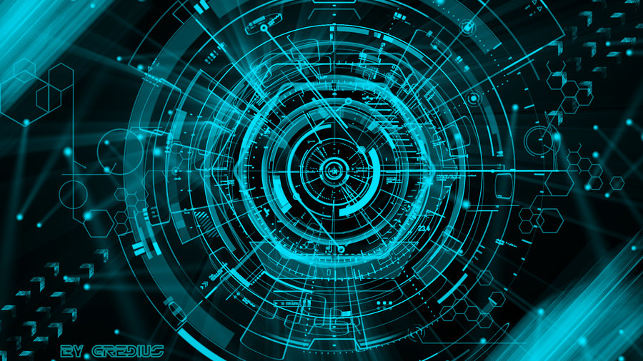

O curso de Graduação em Ciência da Computação – Bacharelado da UFFS oferece 100 vagas anuais no campus de Chapecó (SC), sendo 50 no turno noturno e 50 no matutino (vespertino a partir de 2017.1). A carga horária total do curso é de 3.090 horas distribuídas em 8 (matutino) e 10 (noturno) semestres letivos.
Esse curso vem responder às demandas de desenvolvimento e crescimento regionais e a consequente carência de profissionais da computação capazes de atuar de forma proativa na área de tecnologia da informação (ou computação) no oeste catarinense, bem como nas demais regiões brasileiras.
O Curso de Ciência da Computação da UFFS é um curso que pretende, através de bases sólidas da área de computação, formar cientistas capazes de terem um papel importante em áreas da tecnologia da informação (TI), tanto na indústria quanto na academia. O curso oferece várias opções para o estudante se aprofundar: banco de dados, computação gráfica, redes de computadores, engenharia de software, hardware e teoria da computação. Todos os professores se dedicam integralmente ao curso e todos possuem no mínimo o título de mestre, sendo que aproximadamente a metade tem o título de doutor. Esse perfil dos professores faz com que os estudantes tenham contato com assuntos de ponta da computação. Os estudantes têm acesso aos projetos de pesquisa e de extensão do curso, experiência profissional através do projeto FronteiraTec, além de várias opções de estágios em empresas da região.
O bacharel egresso do curso de Graduação em Ciência da Computação será um profissional qualificado para a pesquisa e desenvolvimento na área de computação, na construção de projeto de software básico e também para o uso de sistemas computadorizados em outras áreas da atividade humana, a fim de viabilizar ou aumentar a produtividade e a qualidade de todos os tipos de procedimentos.
Saiba mais visitando o site da UFFS